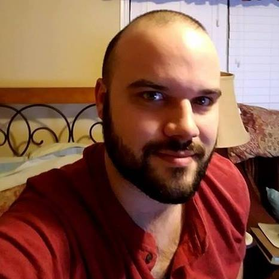

About Me
I am a full-stack web developer with 5 years of web development experience. I began by building websites for a university student organization and an online academic journal using self-taught skills, and I have recently graduated from the Georgia Tech Coding Bootcamp for Web-Development.
I love working on a team with other knowledgeable people and assisting those who are less knowledgeable than myself. My past training in philosophy has given me the tools to think outside the box and develop creative solutions.
I have experience with JavaScript, jQuery, AJAX, Handlebars, React, JSON, Node, Express, SQL, MySQL, Sequelize, MongoDB, Mongoose, HTML, CSS, SASS, Bootstrap, WordPress, GIT, Github, APIs, MVC architecture, computer science fundamentals. I have a passion for making complex and dynamic web apps with an eye toward writing reusable object-oriented code.